Unidad 6: Análisis de estructuras estáticamente determinadas
Vigas, armaduras, método de nudos y secciones, mecanismos y cables.
Contenido de la unidad
6.1 Vigas (p330)
A continuación se presenta un resumen técnico y profesional sobre el estudio de las vigas en la ingeniería mecánica, estructurado a partir de los principios de la estática y el análisis estructural.
1. Definición y función estructural
Las vigas se definen como elementos estructurales diseñados para soportar cargas aplicadas de manera perpendicular a sus ejes. En el ámbito de la mecánica de cuerpos rígidos, el estudio de las vigas se centra en el estado de equilibrio, donde las fuerzas aplicadas no producen movimiento acelerado.
Para un análisis técnico preciso, los ingenieros suelen emplear modelos idealizados. En estos modelos, se asume que materiales como el acero son rígidos, despreciando deflexiones mínimas para simplificar el cálculo de las fuerzas actuantes.
2. Clasificación según apoyos y cargas
La respuesta de una viga depende fundamentalmente de su configuración de soporte. Las clasificaciones comunes incluyen:
- Simplemente apoyadas: articuladas en un extremo y sobre un rodillo en el otro.
- En voladizo (cantilever): fijadas o empotradas en un solo extremo.
- Con voladizo: aquellas cuyos extremos se extienden más allá de los soportes.
- Vigas compuestas y vigas Gerber: estructuras formadas por varios segmentos conectados internamente.
3. Cargas internas y convención de signos
Al someterse a cargas externas, se desarrollan tres tipos de cargas resultantes internas en la sección transversal del elemento:
- Fuerza normal (N): actúa perpendicular a la sección transversal. Se considera positiva si genera tensión.
- Fuerza cortante (V): actúa de forma tangencial a la sección. Es positiva si tiende a hacer girar el segmento en el sentido de las manecillas del reloj.
- Momento flexionante (M): tiende a doblar el elemento. Se define como positivo cuando dobla el segmento de forma cóncava hacia arriba (compresión en la parte superior y tensión en la inferior).
4. Análisis mediante diagramas de control
Para el diseño seguro de una viga, es imperativo conocer la variación de V y M a lo largo de toda su longitud. Esto se logra mediante el método de secciones, seccionando la viga a una distancia arbitraria x para formular ecuaciones de equilibrio.
5. Propiedades geométricas relevantes
El comportamiento de una viga bajo carga también depende de la geometría de su sección transversal:
- Centroide: es el centro geométrico del área donde se considera que actúan las fuerzas resultantes.
- Momento de inercia (I): propiedad necesaria para predecir la resistencia y la deflexión de la viga ante la flexión.
- Módulo de sección: concepto abstracto derivado de la geometría de la sección plana con aplicación directa en el cálculo de esfuerzos.
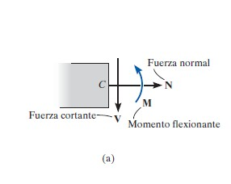
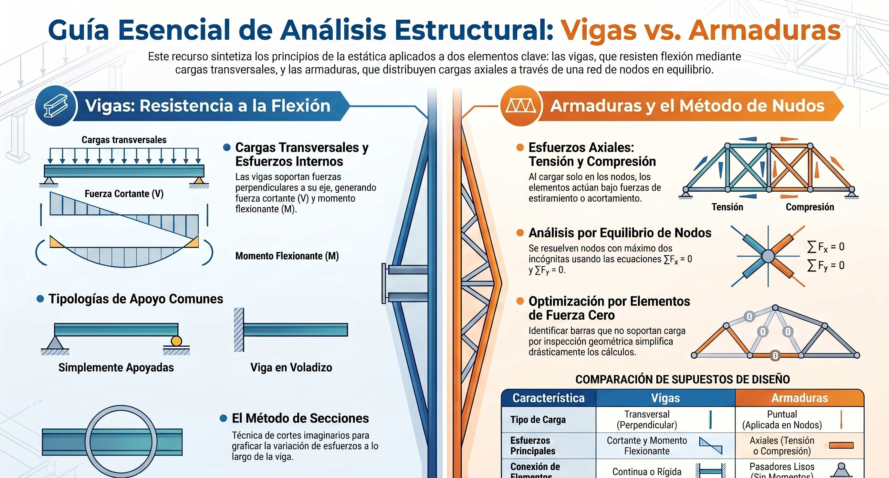
Cargas internas
Si un sistema coplanar de fuerzas actúa sobre un elemento, entonces en general actuarán una fuerza normal interna N, una fuerza cortante V y un momento flexionante M que resultan en cualquier sección transversal a lo largo del elemento. En la figura se muestran las direcciones positivas de estas cargas.
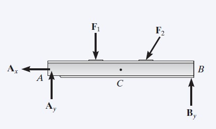
La fuerza normal interna, la fuerza cortante y el momento flexionante que resultan se determinan por el método de secciones. Para encontrarlas, el elemento se secciona en el punto C donde se debe determinar la carga interna. Luego se traza un diagrama de cuerpo libre de una de las partes seccionadas y las cargas internas se muestran en sus direcciones positivas.
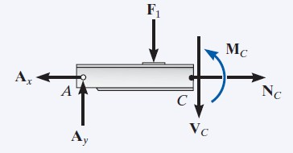
La fuerza normal se determina al sumar las fuerzas normales a la sección transversal. La fuerza cortante que resulta se encuentra al sumar las fuerzas tangentes a la sección transversal, y el momento flexionante se encuentra por la suma de momentos con respecto al centro geométrico o centroide del área de la sección transversal.
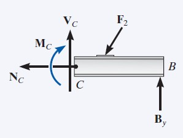
Si el elemento está sometido a una carga tridimensional, entonces, en general, un momento de torsión también actuará sobre la sección transversal. Esta carga se puede determinar por la suma de momentos con respecto a un eje perpendicular a la sección transversal que pasa por su centroide.
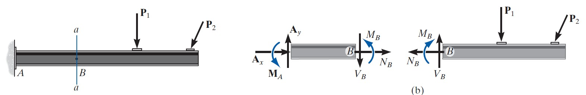
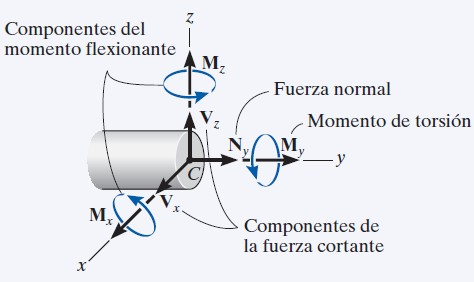
Diagramas de fuerza cortante y de momento flexionante (p345)
Para construir los diagramas de fuerza cortante y de momento flexionante para un elemento, es necesario seccionar el elemento en un punto arbitrario, localizado a una distancia x del extremo izquierdo.
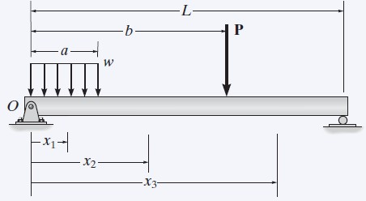
Si la carga externa consta de cambios en la carga distribuida, o sobre el elemento actúa una serie de cargas concentradas y momentos de par, entonces deben determinarse diferentes expresiones para V y M dentro de las regiones entre cualesquier discontinuidades de carga.
En general, las funciones de fuerza cortante y de momento flexionante serán discontinuas, o sus pendientes serán discontinuas en puntos donde una carga distribuida cambia o donde se aplican fuerzas o momentos de par concentrados. Debido a esto, dichas funciones deben determinarse para cada segmento de la viga localizado entre dos discontinuidades de la carga. Por ejemplo, los segmentos que tienen longitudes x1, x2 y x3, tendrán que usarse para describir la variación de V y M en toda la longitud de la viga.
La fuerza cortante y el momento de par desconocidos se indican sobre la sección transversal en la dirección positiva de acuerdo con la convención de signos establecida, y después se determinan la fuerza cortante interna y el momento flexionante como funciones de x.
Entonces se grafica cada una de las funciones de la fuerza cortante y del momento flexionante para crear los diagramas de fuerza cortante y de momento flexionante.
Estas variaciones de V y M a lo largo de la viga pueden obtenerse por el método de secciones analizado. Sin embargo, en este caso es necesario seccionar la viga a una distancia arbitraria x de un extremo para después aplicar las ecuaciones de equilibrio al segmento que tiene la longitud x. Al hacer esto es posible obtener V y M como funciones de x.
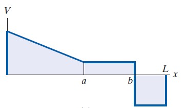
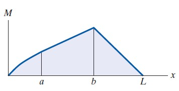
La fuerza normal interna no se considera por dos razones. En la mayoría de los casos, las cargas aplicadas a una viga actúan de manera perpendicular al eje de la viga y, por lo tanto, producen sólo una fuerza cortante y un momento flexionante internos. Para propósitos de diseño, la resistencia de la viga a la fuerza cortante, y en particular a la flexión, es más importante que su capacidad de resistir una fuerza normal.
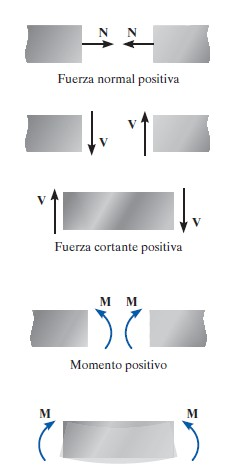
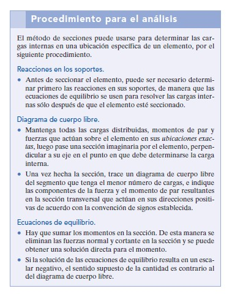
Ejercicio 6.1 (p347)
Determine la fuerza normal, la fuerza cortante y el momento flexionante que actúan justo a la izquierda, punto B, y justo a la derecha, punto C, de la fuerza de 6 kN
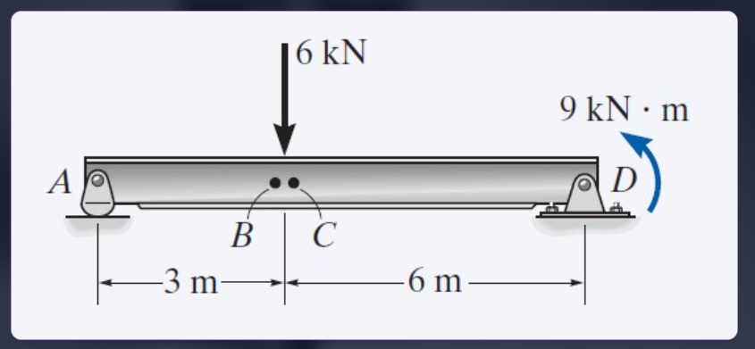
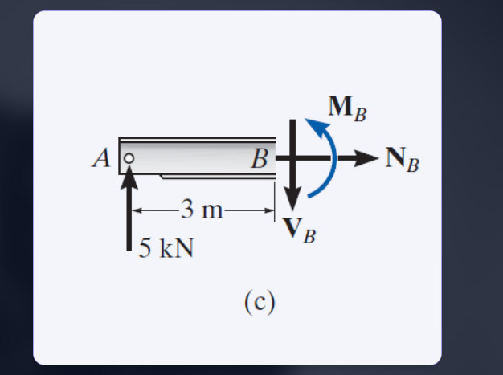
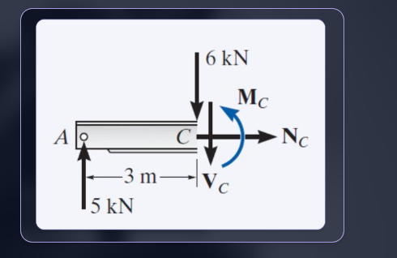
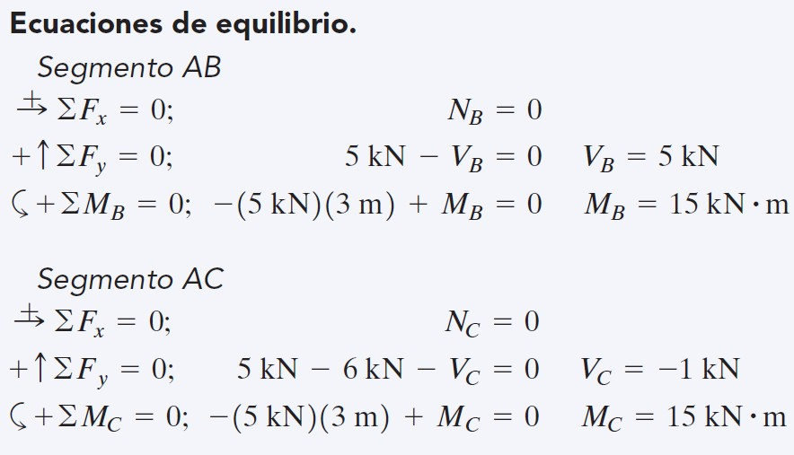
Ejercicio 6.1.2
Determine la fuerza normal, la fuerza cortante y el momento flexionante en el punto C de la viga que se muestra
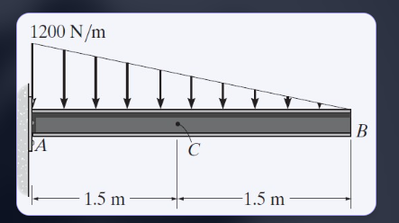
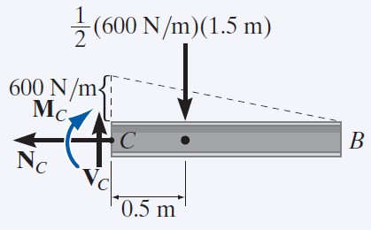
Ejercicio 6.1.3
Determine la fuerza normal, la fuerza cortante y el momento flexionante que actúan en el punto B de la estructura de dos elementos que se muestra en la figura.
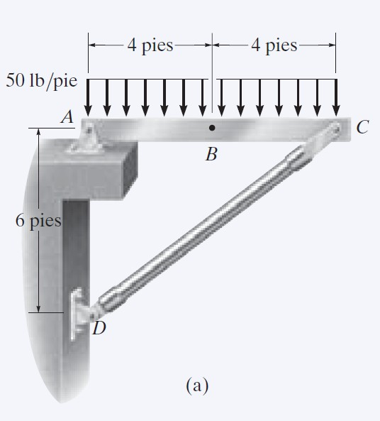
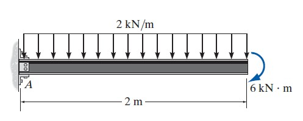
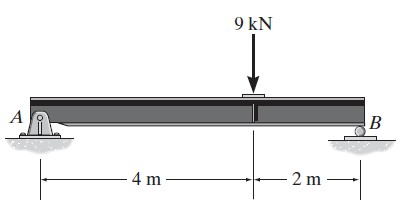
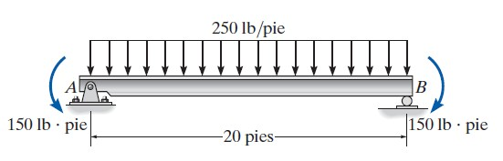
6.2 Armaduras (p263)
Las armaduras son estructuras articuladas formadas por barras conectadas en nudos. Idealmente, cada barra trabaja con fuerzas axiales (tensión o compresión).
Definición y aplicaciones
Las armaduras son estructuras fundamentales compuestas por elementos esbeltos (como barras metálicas o puntales de madera) que se conectan entre sí en sus puntos extremos. En la práctica de la ingeniería, se utilizan ampliamente para soportar cargas en diversas aplicaciones, destacando su uso en la construcción de techos y puentes debido a su eficiencia estructural.
Fundamentos y supuestos de diseño
Para simplificar el análisis de estas estructuras, se establecen supuestos específicos que permiten modelar su comportamiento con precisión:
- Cargas aplicadas en los nudos: se asume que todas las fuerzas externas actúan directamente sobre las uniones o nudos. El peso de los elementos individuales se desprecia habitualmente por ser pequeño en relación con las fuerzas que soportan.
- Conexiones articuladas: los elementos se consideran unidos mediante pasadores lisos en modelos planos, o juntas de rótula esférica en el caso de armaduras espaciales.
- Elementos de dos fuerzas: bajo estos supuestos, cada miembro de la armadura actúa únicamente bajo tensión (el elemento jala el nudo) o compresión (el elemento empuja el nudo) a lo largo de su eje.
Clasificación de las armaduras
- Armaduras simples: son aquellas que se construyen a partir de una armadura triangular básica, expandiéndola mediante la adición de dos elementos y un nudo nuevo en cada etapa.
- Armaduras planas: se caracterizan por estar contenidas en un solo plano y son el diseño estándar para puentes de armadura y cubiertas de edificios.
- Armaduras espaciales: constituyen estructuras tridimensionales formadas por elementos tetraédricos unidos en sus extremos.
Metodologías de análisis estructural
Para determinar las fuerzas internas en los miembros, se emplean dos métodos analíticos principales:
- Método de nudos: se fundamenta en el equilibrio de fuerzas de cada nudo de forma individual. Es el enfoque más adecuado cuando se requiere identificar las fuerzas en todos los elementos que componen la estructura.
- Método de secciones: se basa en el principio de que si una armadura está en equilibrio, cualquier parte o sección de la misma también lo está. Este método es altamente eficiente cuando solo se necesita conocer la fuerza en unos pocos miembros específicos, aplicando las ecuaciones de equilibrio al segmento aislado tras un corte imaginario.
Elementos de fuerza cero
Un aspecto crítico en el análisis por inspección es la identificación de los elementos de fuerza cero. Estos miembros no soportan carga bajo condiciones específicas de carga externa, pero son esenciales para mantener la estabilidad de la estructura durante el proceso de construcción o para proporcionar soporte si la distribución de la carga llegara a cambiar.
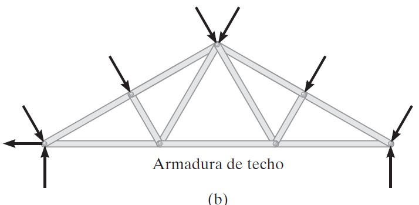
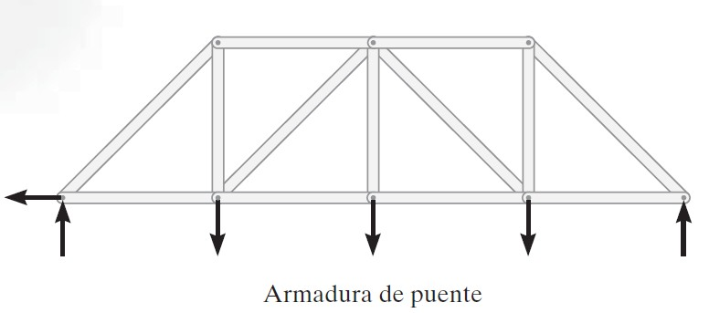
Supuestos para el diseño
Para diseñar los elementos y las conexiones de una armadura, es necesario determinar primero la fuerza desarrollada en cada elemento cuando la armadura está sometida a una carga dada. Para esto, haremos dos supuestos importantes:
Todas las cargas se aplican en los nudos. En la mayoría de las situaciones, como en armaduras de puentes y de techos, este supuesto se cumple. A menudo se pasa por alto el peso de los elementos, ya que la fuerza soportada por cada elemento suele ser mucho más grande que su peso. Sin embargo, si el peso debe ser incluido en el análisis, por lo general es satisfactorio aplicarlo como una fuerza vertical con la mitad de su magnitud aplicada a cada extremo del elemento.
Los elementos están unidos entre sí mediante pasadores lisos. Por lo general, las conexiones de los nudos se forman empernando o soldando los extremos de los elementos a una placa común, llamada placa de unión, como se muestra en la figura 6-3a, o simplemente pasando un perno o pasador largo a través de cada uno de los elementos, figura 6-3b. Podemos suponer que estas conexiones actúan como pasadores siempre que las líneas centrales de los elementos unidos sean concurrentes, como en la figura 6-3.
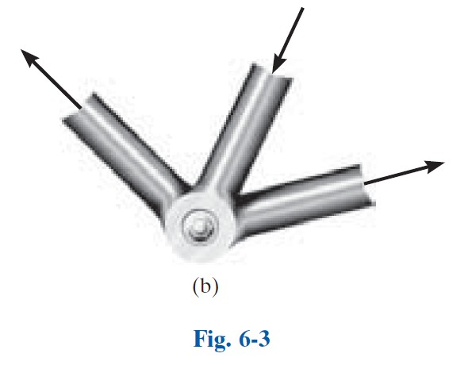
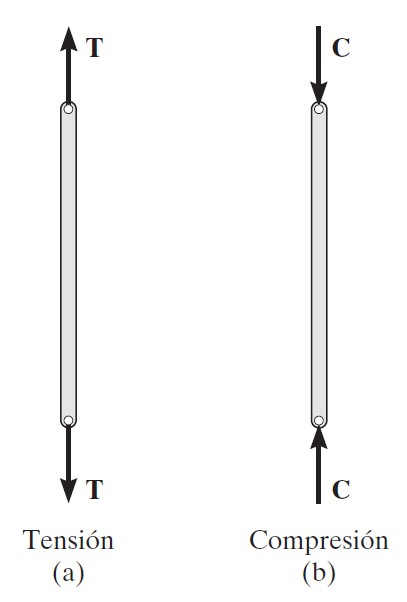
Armadura simple. Si tres elementos se conectan entre sí mediante pasadores en sus extremos, forman una armadura triangular que será rígida, figura 6-5. Al unir dos elementos más y conectar estos elementos a una nueva junta D se forma una armadura más grande, figura 6-6. Este procedimiento puede repetirse todas las veces que se desee para formar una armadura aún más grande. Si una armadura se puede construir expandiendo de este modo la armadura triangular básica, se denomina una armadura simple.
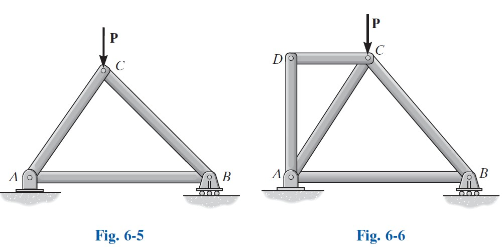
6.2.1 Método de nudos
Consiste en aislar un nudo donde actúan fuerzas conocidas y algunas fuerzas de barras desconocidas, y aplicar equilibrio de fuerzas en x e y.
Para analizar o diseñar una armadura, es necesario determinar la fuerza en cada uno de sus elementos. Una forma de hacer esto consiste en emplear el método de nodos. Este método se basa en el hecho de que toda la armadura está en equilibrio, entonces cada uno de sus nodos también está en equilibrio. Por lo tanto, si se traza el diagrama de cuerpo libre de cada nodo, se pueden usar las ecuaciones de equilibrio de fuerzas para obtener las fuerzas de los elementos que actúan sobre cada nodo. Como los elementos de una armadura plana son elementos rectos de dos fuerzas que se encuentran en el mismo plano, cada nodo está sometido a un sistema de fuerzas que es coplanar y concurrente. En consecuencia, solo es necesario satisfacer ∑Fx = 0 y ∑Fy = 0 para garantizar el equilibrio.
Cuando se usa el método de los nodos, siempre se debe comenzar en un nodo que tenga por lo menos una fuerza conocida y cuando mucho dos fuerzas desconocidas, como en la figura 6-7b. De esta manera, la aplicación de ∑Fx = 0 y ∑Fy = 0 resulta en dos ecuaciones algebraicas de las cuales se pueden despejar las dos incógnitas. Al aplicar esas ecuaciones, el sentido correcto de una fuerza de elemento desconocida puede determinarse con uno de dos posibles métodos.
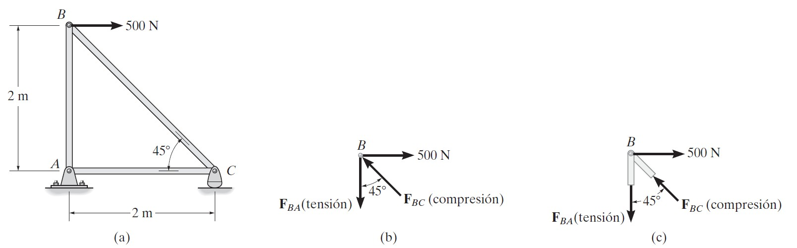
El sentido correcto de la dirección de una fuerza desconocida de un elemento puede determinarse, en muchos casos, “por inspección”. Por ejemplo, FBC en la figura 6-7b debe empujar sobre el pasador (compresión) ya que su componente horizontal, FBC sen 45°, debe equilibrar la fuerza de 500 N (∑Fx = 0). De la misma manera, FBA es una fuerza de tensión ya que equilibra a la componente vertical, FBC cos 45° (∑Fy = 0). En casos más complicados, el sentido de la fuerza desconocida de un elemento puede suponerse; luego, después de aplicar las ecuaciones de equilibrio, el sentido supuesto puede verificarse a partir de los resultados numéricos. Una respuesta positiva indica que el sentido es correcto, mientras que una respuesta negativa indica que el sentido mostrado en el diagrama de cuerpo libre se debe invertir.
Suponga siempre que las fuerzas desconocidas en los elementos que actúan en el diagrama de cuerpo libre del nodo están en tensión; es decir, las fuerzas “jalan” el pasador. Si se hace así, entonces la solución numérica de las ecuaciones de equilibrio darán escalares positivos para elementos en tensión y escalares negativos para elementos en compresión. Una vez que se encuentre la fuerza desconocida de un elemento, aplique su magnitud y su sentido correctos (T o C) en los subsecuentes diagramas de cuerpo libre de los nodos.
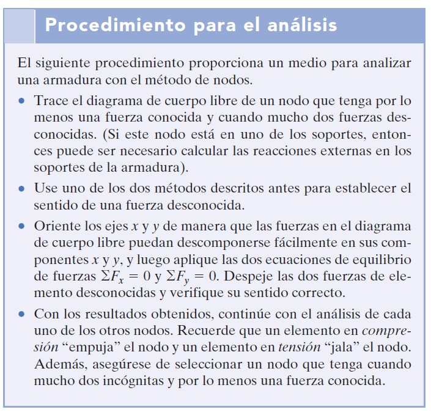
Ejercicio 6.2.a
Determine la fuerza que actúa en cada uno de los elementos de la armadura que se muestra en la figura; además, indique si los elementos están en tensión o en compresión.
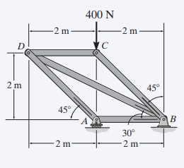
SOLUCIÓN
Como el nodo C tiene una fuerza conocida y sólo dos fuerzas desconocidas que actúan sobre él, es posible comenzar en este punto, después analizar el nodo D y por último el nodo A. De esta forma las reacciones de soporte no tendrán que determinarse antes de comenzar el análisis.
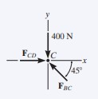
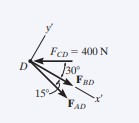
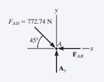
Nodo C. Por inspección del equilibrio de fuerzas, figura 6-9b, se puede observar que ambos elementos BC y CD deben estar en compresión.
Nodo D. Con el resultado FCD = 400 N (C), la fuerza en los elementos BD y AD puede encontrarse al analizar el equilibrio del nodo D. Supondremos que tanto FAD como FBD son fuerzas de tensión, figura 6-9c. El sistema coordenado x′, y′ se establecerá de modo que el eje x′ esté dirigido a lo largo de FBD. De esta manera, eliminaremos la necesidad de resolver dos ecuaciones simultáneamente. Ahora FAD se puede obtener directamente al aplicar ∑Fy′ = 0.
Ejercicio 6.2.b
Determine la fuerza en cada elemento de la armadura mostrada en la figura. Indique si los elementos están en tensión o en compresión.
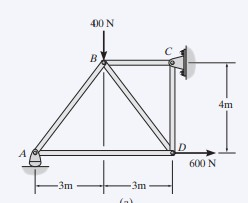
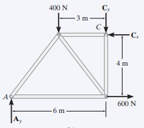
Reacciones en los soportes. No se puede analizar ningún nodo hasta que se hayan determinado las reacciones en los soportes, porque cada nodo tiene más de tres fuerzas desconocidas que actúan sobre él. En la figura 6-10b se presenta un diagrama de cuerpo libre de toda la armadura.
El análisis puede empezar ahora en cualquiera de los nodos A o C. La elección es arbitraria ya que hay una fuerza conocida y dos fuerzas de elemento desconocidas que actúan sobre el pasador en cada uno de esos nodos.
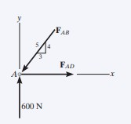
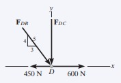
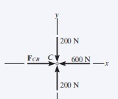
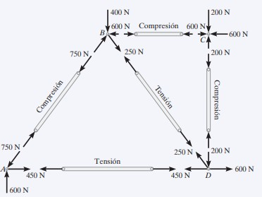
Nodo A. Como se muestra en el diagrama de cuerpo libre, se supone que FAB es una fuerza de compresión y FAD es de tensión. Al aplicar las ecuaciones de equilibrio, tenemos
6.2.2 Método de secciones
Cuando necesitamos encontrar la fuerza en sólo unos cuantos elementos de una armadura, ésta puede analizarse mediante el método de secciones. Este método se basa en el principio de que si la armadura está en equilibrio, entonces cualquier segmento de la armadura está también en equilibrio. Por ejemplo, considere los dos elementos de armadura mostrados a la izquierda en la figura 6-14. Si se deben determinar las fuerzas dentro de los elementos, entonces puede utilizarse una sección imaginaria, indicada por la línea azul, para cortar cada elemento en dos partes y en consecuencia “exponer” cada fuerza interna como “externa” como se indica en los diagramas de cuerpo libre de la derecha. Se puede observar con claridad que para que haya equilibrio el elemento que está en tensión (T) está sujeto a un “jalón”, mientras que el elemento en compresión (C) está sometido a un “empujón”.
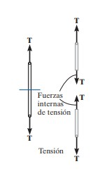
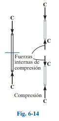
El método de secciones puede usarse también para “cortar” o seccionar los elementos de toda una armadura. Si la sección pasa por la armadura y se traza el diagrama de cuerpo libre de cualquiera de sus dos partes, entonces podemos aplicar las ecuaciones de equilibrio a esa parte para determinar las fuerzas del elemento en la “sección cortada”. Como sólo se pueden aplicar tres ecuaciones independientes de equilibrio (∑Fx = 0, ∑Fy = 0, ∑MO = 0) al diagrama de cuerpo libre de cualquier segmento, debemos tratar de seleccionar una sección que, en general, pase por no más de tres elementos en que las fuerzas sean desconocidas. Por ejemplo, considere la armadura que se muestra en la figura 6-15a. Si se deben determinar las fuerzas en los elementos BC, GC y GF, la sección a–a podría ser apropiada. Los diagramas de cuerpo libre de las dos partes se muestran en las figuras 6-15b y 6-15c. Observe que la línea de acción de cada fuerza del elemento se especifica a partir de la geometría de la armadura, ya que la fuerza en un elemento pasa a lo largo de su eje. Además, las fuerzas del elemento que actúan sobre una parte de la armadura son iguales pero opuestas a las que actúan sobre la otra parte —tercera ley de Newton—. Se supone que los elementos BC y GC están en tensión puesto que se encuentran sometidos a un “jalón”, mientras que GF está en compresión porque se encuentra sometido a un “empujón”. Las tres fuerzas de elemento desconocidas FBC, FGC y FGF pueden obtenerse al aplicar las tres ecuaciones de equilibrio al diagrama de cuerpo libre de la figura 6-15b. Sin embargo, si se considera el diagrama de cuerpo libre de la figura 6-15c, se tendrán que conocer las tres reacciones de soporte Dx, Dy y Ex, porque sólo hay tres ecuaciones de equilibrio disponibles. (Por supuesto, esto se hace de la manera usual si se considera un diagrama de cuerpo libre de toda la armadura.)
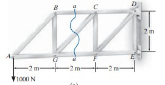
Al aplicar las ecuaciones de equilibrio debemos considerar con gran cuidado las maneras de escribir las ecuaciones de modo que den una solución directa para cada una de las incógnitas, en vez de tener que resolver ecuaciones simultáneas. Por ejemplo, con el segmento de armadura de la figura 6-15b y la suma de momentos con respecto a C, se obtendría una solución directa para FGF ya que FBC y FGC no producen ningún momento con respecto a C. De la misma manera, FBC puede obtenerse directamente a partir de una suma de momentos con respecto a G. Por último, FGC puede encontrarse directamente a partir de una suma de fuerzas en la dirección vertical ya que FGF y FBC no tienen componentes verticales. Esta capacidad de determinar directamente la fuerza en un elemento particular de una armadura es una de las ventajas principales del método de secciones.
Al igual que en el método de nodos, hay dos maneras en que se puede determinar el sentido correcto de una fuerza de elemento desconocida:
En muchos casos, el sentido correcto de una fuerza de elemento desconocida puede determinarse “por inspección”. Por ejemplo, FBC es una fuerza de tensión tal como se representa en la figura 6-15b, ya que el equilibrio por momentos con respecto a G requiere que FBC genere un momento opuesto al de la fuerza de 1000 N. Además, FGC es una fuerza de tensión puesto que su componente vertical debe equilibrar la fuerza de 1000 N que actúa hacia abajo. En casos más complicados, el sentido de una fuerza de elemento desconocida puede suponerse. Si la solución resulta un escalar negativo, esto indica que el sentido de la fuerza es opuesto al del diagrama de cuerpo libre.
Siempre suponga que las fuerzas desconocidas en elementos de la sección cortada están en tensión, es decir, “jalando” al elemento. Al hacer esto, la solución numérica de las ecuaciones de equilibrio dará escalares positivos para elementos en tensión y escalares negativos para elementos en compresión.
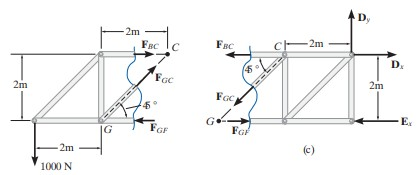
6.3 Mecanismos
Un mecanismo es un sistema con movilidad: parte de la energía del sistema se transforma en movimiento debido a la geometría y restricciones. En estática, se analiza la posibilidad de movimiento usando criterios de determinación y equilibrio.
6.4 Cables
Los cables transmiten fuerzas principalmente por tensión. El análisis considera la forma de la catenaria o, para cargas simplificadas, el comportamiento equivalente en equilibrio.
En la práctica se estudian componentes de tensión y reacciones en los apoyos, vinculadas al diagrama de cuerpo libre.
Video Unidad 6 (9:16) — Si no carga, ábrelo aquí.